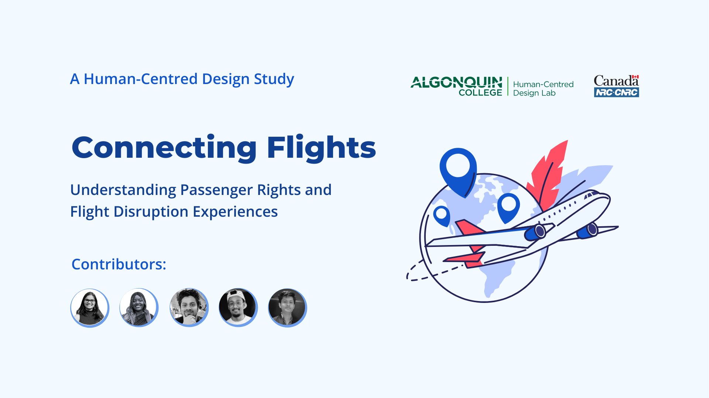

Connecting Flights - InformMeRight
A case study focused on improving passenger experiences during flight disruptions. It explores how clearer communication and accessible information can help travelers understand their rights and manage disruptions with confidence.
Discovery
Usability
Web
View Case Study